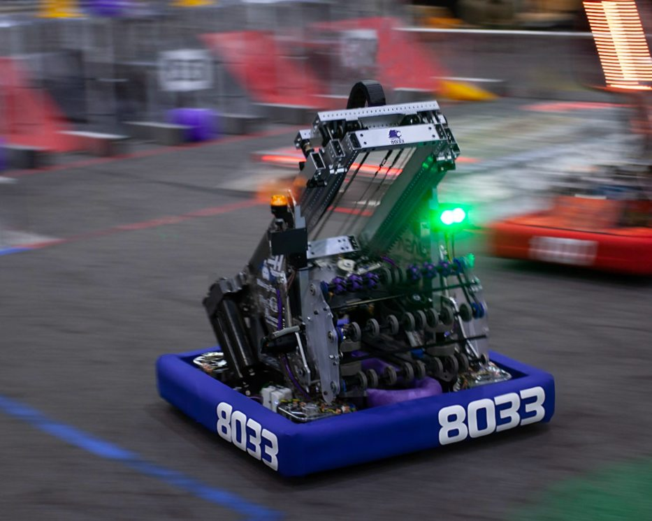

I also did robotics this year. I'm on FRC 8033 Highlander Robotics, which is based out of Piedmont High's engineering lab. This is the robot we built for this year's challenge. We were finalists at both our regionals and qualified for worlds, where we made semifinals! This is also where I got inspiration for swerve drive as a research project